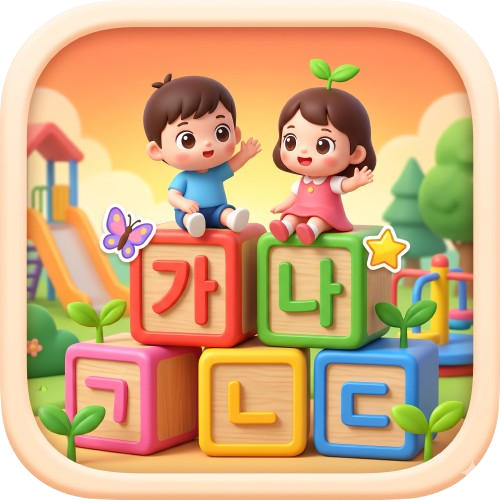

아래 가 ~ 하 보기에서 알맞은 글자를 눌러 주세요!
아래 보기 중에서 빈칸에 들어갈 글자를 찾아 눌러 주세요!
적절한 카드를 찾아 눌러 보세요!
Chrome 또는 삼성 인터넷 우측 상단 메뉴(⋮ 또는 ≡)를 누른 뒤 [앱 설치] 또는 [홈 화면에 추가]를 선택해 주세요.
Safari 브라우저 상단 또는 하단의 [공유하기 📤] 버튼을 누른 뒤, 메뉴에서 [홈 화면에 추가 ➕]를 누르면 앱처럼 전체 화면으로 이용할 수 있어요!
💡 깃허브 페이지(GitHub Pages) 저장소 폴더 구성 안내
깃허브 저장소 루트 경로에 아래 5개 파일을 함께 올려주시면 아이콘 적용, 앱 설치 버튼, 그리고 캐시 방해 없는 즉시 코드 업데이트가 완벽하게 작동합니다: index.html, manifest.json, sw.js, icon.ico, icon.png
index.html
manifest.json
sw.js
icon.ico
icon.png
💡 팁: 목록에 ★ 고음질(Natural / Google / Yuna / Sora) 표시가 있는 목소리나 ☁️ 클라우드 아나운서를 선택하시면 훨씬 자연스럽게 읽어줍니다.
진단 중...
⚙️ 기기 설정 팁: 안드로이드/갤럭시 탭은 [설정 → 일반 → 텍스트 읽어주기(TTS)]에서 선호 엔진을 Google 음성 인식 및 합성으로 바꾸고 한국어 음성 데이터를 설치하면 모든 음성이 가장 자연스럽게 나옵니다.